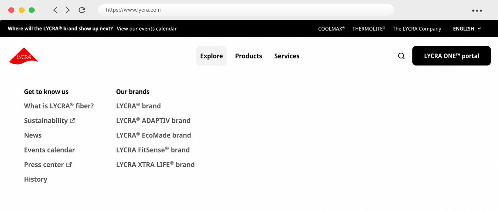
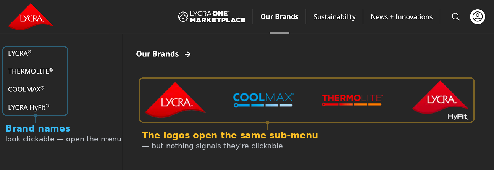
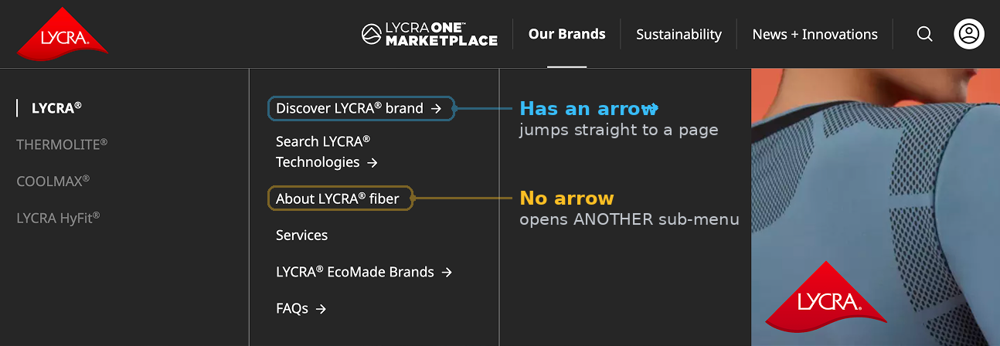
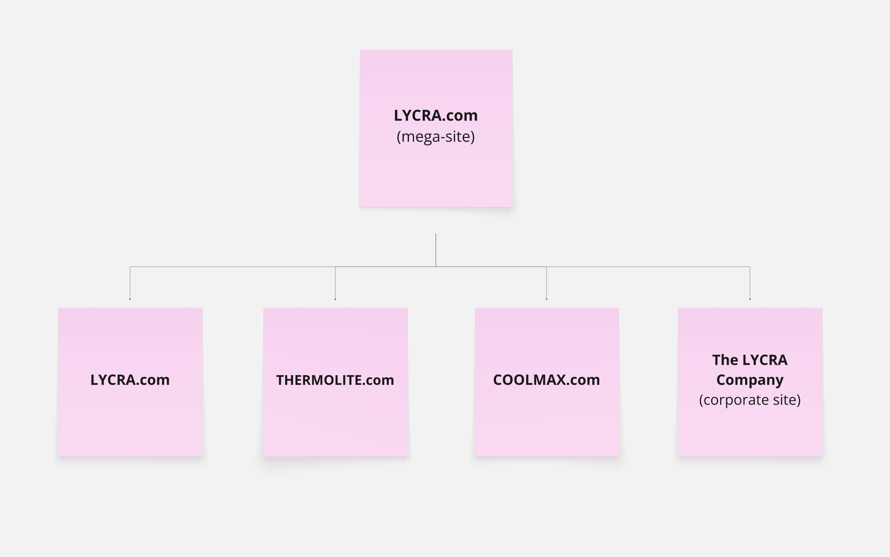
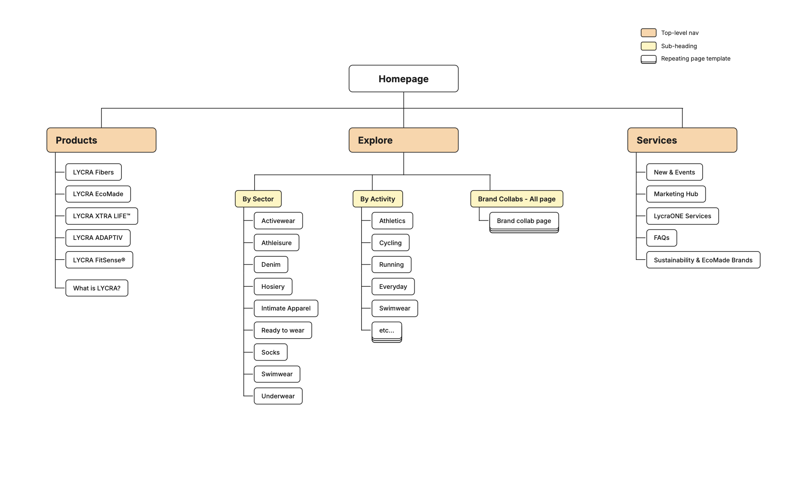
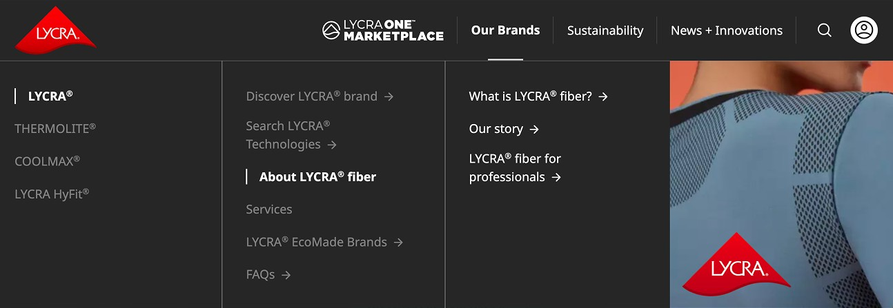
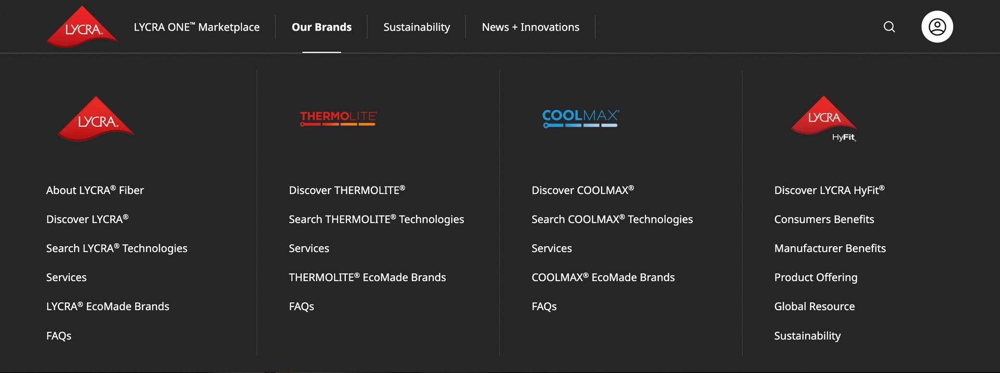
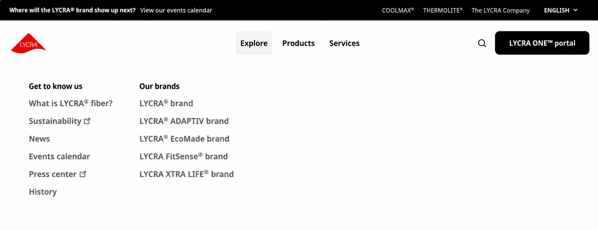

A three-phase simplification of an overloaded multi-brand navigation that created clear, independent experiences for The LYCRA Company and its brands.

When the LYCRA, THERMOLITE, and COOLMAX websites were combined into one mega-site, the global navigation became overloaded and essential links became deeply nested. I simplified the navigation using the existing design system, helped restructure the content as the brands transitioned to individual sites, and designed each brand’s navigation using a new design system.
This project ran from January 2023 – June 2025 and took a three-phase approach.
Jan 2023
Four brand sites merged into one. Overloaded, multi-click navigation.
Sept 2023 – Mar 2025
Four brand sites merged into one. Overloaded, multi-click navigation.
Mar – Jun 2025
Sites split apart. 4 sites launch with the new design system.
Too many clicks
LYCRA.com serves brands, mills and retailers looking for the right fiber technology. In January 2023, the separate brand sites were merged into one without first restructuring the content. Each brand brought its own products and pages, and reaching a destination could take three or four clicks.
"What is LYCRA® fiber?" is the core product question and likely a top task for new visitors. It sat 4 levels deep.
Brands → LYCRA → About LYCRA fiber → What is LYCRA fiber?
Brand names and the large brand logos opened the same sub-menu, but nothing signaled the logos were clickable

Inside a single column, some items opened a page and others opened another column. The only difference was a small arrow, and nothing explained what it meant. Users couldn't tell what a click would do until they made it.

Everything in One Menu
The redesign had to stay within the existing design system, so the fix came from structure alone. I mapped a restructured navigation live in Miro with the Project Manager and Global Head of Digital Content, grouping every destination under clear headers.
Each top-level item opens one flat mega-menu. Every item is a direct link, so a click always does one thing. The brand logos stayed, as headers above visible links rather than the only way in.
The main decision was to organize each menu around how people look for things rather than how the company was structured. LYCRA ONE Marketplace links were grouped by audience: services, brands and retailers, and mills. In Our Brands, every page for a brand sits in one visible column, so About LYCRA Fiber, which used to sit three levels deep, became the first link under LYCRA.
The redesigned navigation launched in September 2023 and stayed in production for about 18 months, until the brand sites were separated.
From one site to four
In 2024, leadership decided to separate the merged site with two goals in mind. Giving each brand its own site would simplify navigation further, and it would let each brand build its own identity instead of living under the LYCRA.com name. The separation produced a corporate parent site, The LYCRA Company, above three standalone brand sites: LYCRA, THERMOLITE and COOLMAX.

Senior leadership wanted users to find technologies by use case. I proposed a restructure for LYCRA.com that organized products by sector and by activity.

Before development, I ran exploratory usability testing comparing multiple navigation directions, including my Phase 2 (simplified) design. It was a small study with 2 experienced LYCRA customers, so the goal was to surface problems rather than pick a winner.
In pursuit of the final site-map direction for Phase 3, I organized a 2-day live Miro workshop where I worked with the project manager, the Global Head of Digital Content, and the VP of Brands & Marketing to decide what to keep, remove and reassign.
The workshop kept the core idea, browsing by use case, and broadened it: products became findable three ways, by brand, by garment category and by fabric process. Browsing by activity didn't carry forward. Some tools came out of the navigation entirely, such as brand licensing and garment letter requests.
I translated the restructured navigation into VML's new design system and designed it for each brand site. CI&T built and released the sites in phases: LYCRA in March 2025, THERMOLITE in May, COOLMAX in June. Organizing products by garment category, an idea from the original proposal, made it into production.
The evolution



Phase 2 showed how much could be fixed through structure alone, without touching the visual design. Phase 3 showed the limits of rearranging the same content. Phase 1 & 2 were a reflection of a tangled organization. The lasting fix was to to untangle the content itself. And that takes alignment with leadership, in addition to design.
If I did it again, I'd test earlier and with people unfamiliar with LYCRA. Both participants were experienced customers. Newcomers who know nothing of LYCRA, went untested, even though they are the the people the navigation needs to serve most. Even so, a two-person test caught two problems before they shipped.